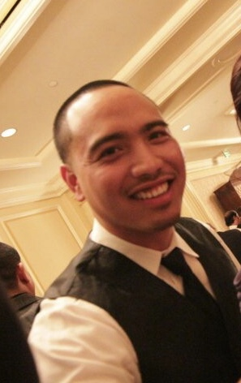

About Me

I was born in San Francisco and then moved to a city called Hercules where I spent the rest of my childhood/teen life. Growing up my hobbies were creating music, graphic designing, and sports. After high school I then atteneded a junior college which didn't pan out the way I wanted it to, so I decided to get full time job for few years until I decided to go to The Conservatory of Recording Arts and Sciences in 2011.
After I graduated from the recording school, I interned at a professional studio called The Mix Room. After my intern I became a freelance audio engineer for a few years, however it wasn't stable, so I wanted to try something different. Being creative and a technical person, I started my new journey into becoming a full stack web developer. During my program I was able to become comfortable in writing languages such as JavaScript, HTML, CSS, JQuery, NodeJS, and React. I also was able to understand the backend development as well, i.e MongoDB, Mongoose, Express, Node, and mySQL. As I continue my journey as a developer I am open to learning new technology and making sure that I continue teaching myself the languages to better my craft as a developer.